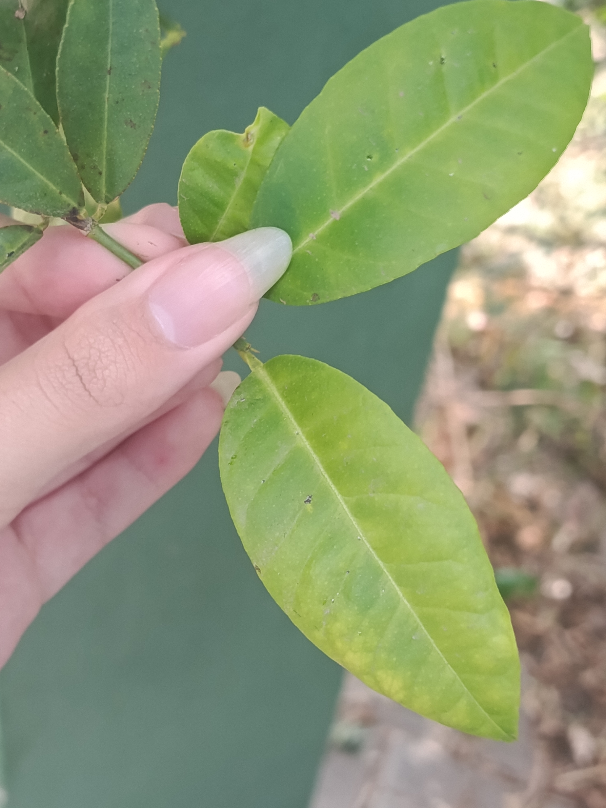
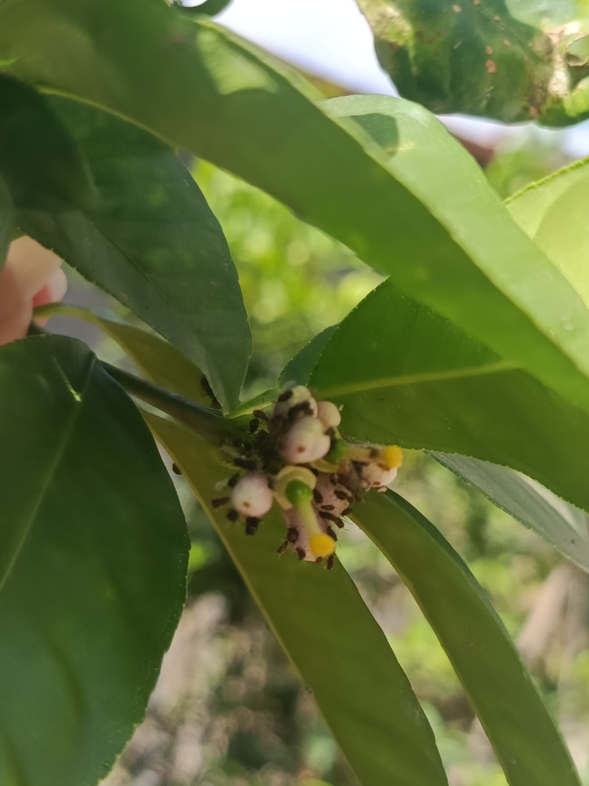
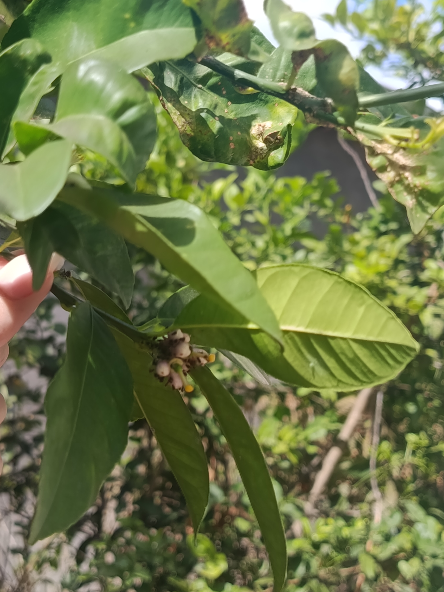
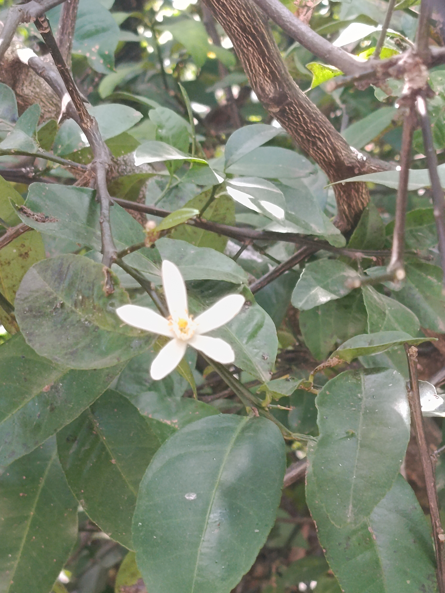
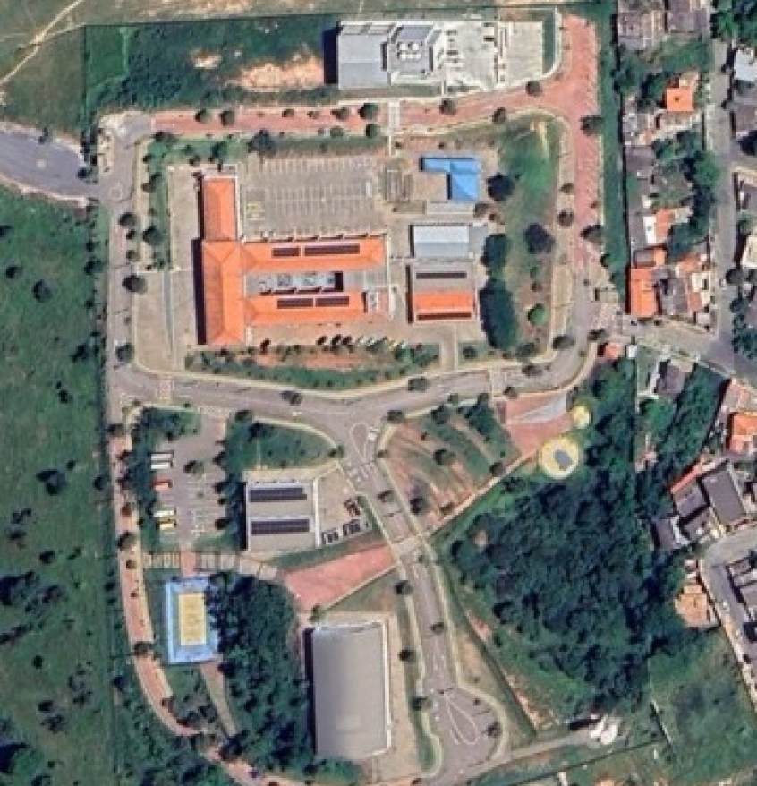

Schinus cf. areira L.
NOMES(s) POPULAR(ES)
Aroeira-salsa
GÊNERO
Citrus
FAMÍLIA
Anacardiaceae
Nomes populares alternativos.
aroeirinha, aroeira-peruana, falso-pimenteiro
Imagens




Origem e distribuição geográfica
Originária da América do Sul, especialmente das regiões andinas do Peru, Bolívia e norte do Chile. Atualmente, é cultivada em diferentes regiões do mundo, principalmente para fins ornamentais e de arborização urbana. Destaca-se por sua resistência a períodos de seca e pela capacidade de se desenvolver em ambientes ensolarados.
Status de ocorrência
Exótica no Brasil, ou seja, não faz parte da flora naturalmente distribuída no território brasileiro, embora outras espécies do gênero Schinus sejam nativas do país.
Características
A “aroeirinha” apresenta uma copa ampla, com ramos longos e pendentes, que conferem à árvore uma aparência semelhante à do salgueiro. Suas folhas são compostas e pinadas, ou seja, divididas em vários folíolos (pequenas unidades semelhantes a folhas) distribuídos ao longo de um eixo central. Esses folíolos são estreitos e alongados e, quando amassados, liberam um aroma característico. As flores são pequenas, esbranquiçadas e reunidas em inflorescências (conjuntos de flores agrupadas). Os frutos são pequenos, arredondados e geralmente rosados ou avermelhados quando maduros, formando cachos pendentes que se destacam entre as folhas.
Curiosidades
Você sabia que os frutos da aroeira-salsa se assemelham à pimenta-rosa? Apesar da aparência e do aroma picante, a planta não pertence à mesma família da pimenta-do-reino (Piper nigrum). Seus frutos são utilizados como condimento em algumas regiões, mas o consumo não deve ser incentivado sem a identificação correta da planta e a confirmação de sua segurança.
Outra curiosidade é que suas folhas e seus frutos contêm óleos essenciais, substâncias aromáticas que contribuem para o cheiro característico da planta e podem desempenhar funções de defesa contra herbívoros e outros organismos.
Localização no
Campus

PRÓXIMO À
Sem informações.
COORDENADA
Sem informações.